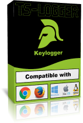

Téléchargements
TS-Keylogger
TS-Keylogger est une extention pour Google Chrome. Le keylogger est 100% grtuit et Open source il enregistre tout se que vous tapper: mot de
passe, nom d'utilisater, message envoyer, vos recherche et bien plus!
